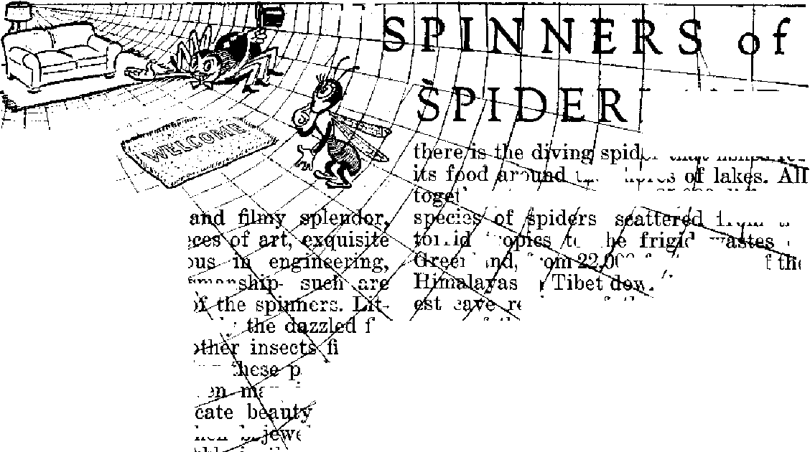

The Church’s role is far more than "guardian of morals” as she sets up "Iron Curtain of the Movies”
Hectic days and nights of looting and killing
A glimpse at them as weavers, hunters and lovers
THE MISSION OF THIS JOURNAL
News sources that are able to keep you awake to the vital Issues of . our timed must be unfettered by censorship and selfish interests, “Awake!” has no fetters. It recognizes facts, faces facts, is free to publish facts. It is not bound by political ambitions or obligations; it is unhampered by advertisers whose toes must not be trodden on; it is unprejudiced by traditional creeds. This journal keeps itself free that it may speak freely to you. But it does not abuse its freedom. It maintains integrity to truth,
“Awake!” uses the regular news channels, but is not dependent on them. Its own correspondents arc on all continents, in scores of nations. From the four corners of the earth their uncen sored, on* the-scenes reports come to you through these columns. This journal’s viewpoint is not narrow, but is international. It is read in many nations, in many languages, by persons of all ages. Through its pages many fields of knowledge pass in review—government, commerce, religion, history, geography, science, social conditions, natural wonders—why, its cover* age is as broad as the earth and as high as the heavens.
“Awake I” pledges itself to righteous principles, to exposing hidden foes and subtle dangers, to championing freedom for all, to comforting mourners and strengthening those disheartened by the failures of a delinquent world, reflecting sure hope for the establishment of a righteous New World.
Get acquainted with “Awake!” Keep awake by reading “Awake!”
Published Semimonthly By
WATCHTOWER BIBLE AND TRACT SOCIETY, INC.
117 Adams Street Brooklyn 1, N. Y-, U* 8, A.
N. H. Knowc, President Grant Suiter, Secretory
Five cents a copy One dollar a year
ttemlttniFees should be eent to office In your country In compIUuco with regulations to guarantee fUe delivery of money. Eemlttances are accepted at Brooklyn from countries where no office is located* by International money order only. Subscription rates in different countries are here stated in local currency.
Notice ef fiipfratlon (with renewal blanA) is sent at least tiro issues before subscription expires.
Changs if adirws when «ent to our office may be expected effective within one month. Eend your old as veil as new address.
Offices Yearly Subscription Bate
America, U.S., LIT Adams St.* Brooklyn 1, N. Y. fl Attrtralla, 7 Beresford Bd., Strathfleld, N.8.W. 6a Canada. 40 Irwin Ave., Toronto 6, Ontario $1 Ecglana, 34 Craven Terrace, London, W. 2 Qs Soith Africa, 628 Boston House, Cape Town 5s
Entered as second-class nutter at Brooklyn, N. I., Act of March 3, 1879. Printed In U.S.A
CONTENTS
Catholic Censorship of the Movies
The Legion, Private Pressure Group
Vehicle for Catholic Propaganda
Native Uprisings Strike the Gold Coast
Nerve and Pore Systems of the Skin 18
Priestly Oppression from Spain
'Rizal’s Expose of the Priests
Finally, Philippine Independence
“Thy Word Is Truth”
The Main Thing for Which to Pray 25
Preaching in Parks in Medfield
C^Now it is high time to Romans 13:11 ft/
Volume XXIX Brooklyn, N.Y,, September 8, 1948 Number 17
■ ■■■■■■ ■ — i.r................. ............ ... ... ,, , ----------—
Catholic Censorship of the
MWES
EVERY movie that is witnessed by the sixty million Americans that attend the cinema is censored by a Catholic organization controlled by the Roman Papacy. Although Catholic movie-goers are estimated at less than a third of the total attendance, and although Catholics number less than a fifth of the total population of the United States, nevertheless every major film producer has submitted itself to a Catholic censorship that approaches the Nazi pattern in thoroughness. Not only the major producers, but also foreign and non-member producers have also submitted to Papal control because they need the approval of the PCA (Production Code Administrator) to exhibit their films in member-owned theaters. Added to this is a private Catholic censorship body, called the Legion of Decency, that runs the whole works.
Just how is this accomplished in a nominally non-Catholic and democratic land? Is it done in the interest of the Catholic population as claimed? Why has it come about? and what are the results? Why have Americans been generally unaware of this insidious threat to liberty? These questions concerning so great a publicity channel cannot be lightly dismissed. The origin, structure, and operation of the censorship body is treated as of public interest.
Nor should Catholics wrongly assume that this is a Protestant attack on their religion. Their interest in the matter of picture censorship is just as vital as that of their non-Catholic fellow citizens. As one writer puts it: “Because most Catholics in this country are good citizens and good Americans it seems inevitable that sooner or later they will recognize the censorship of their priesthood for what it is, a survival of medieval coercion which has no rightful place in the American environment.” (“Roman Catholic Censorship, II, The Church and the Movjes,” The Nation, May 8, 1948) Motion picture censorship joins hands with Catholic press and radio censorship to form an unholy three. As part of a strong ring throwing a curtain around what Americans should hear and see, the division ostensibly protecting Catholic morals against salacious films should be given critical examination. Admittedly the Roman Catholic Hierarchy censors the news. But they have not suggested that Catholics need to be protected from press descriptions of theft, murder and sex crimes. Is movie immorality worse?
In fact, the great Catholic Church hue and cry about immorality in the movies is at least open to the suspicion that it is an excuse and smoke screen to cover up the primary objective of Roman censorship, namely, to suppress and delete
ALL HISTORICAL, POLITICAL, AND RELIGIOUS FILM SEQUENCES THAT MIGHT EXPOSE THE Catholic church to criticism. A later consideration of some of the Legion of Decency’s condemnations of individual films exposes this concealed intention.
The manner in which the people have been generally taken in is spotlighted by the Nation writer:
Most Americans probably think that the Legion of Decency, the Roman Catholic instrument for censoring films, is concerned primarily with what H. L. Mencken once called “translucent drawers”. The legion’s name implies that it is the guardian of purity. . . . It pleases the Catholic Hierarchy to have Americans to take this view of the agency because if it were called the Catholic Political and Doctrinal Censorship it would immediately lose its usefulness to the church. . . . Actually, the Legion of Decency, in its private censorship of nearly four hundred films a year, is far more concerned with Catholic dogma and Catholic philosophy than with decency.
It should be remembered that the government has its regular censorship board which censors out suggestive sequences, recumbent petting, etc. After this, over and above this agency’s operations, the Legion of Decency has constituted itself the super sifter of cinema sin. Exposure of too much thigh is often the talking point. But exposure of too much of Rome’s history is the acting point!’
“Many people believe that the industry is over-censored already by government, the Johnston office, and a considerable amount of internal Catholic influence,” said the writer in The Nation. In order to understand how this “influence” makes itself so painfully felt, an examination of the origin and structure of the PCA and the Legion of Decency is needed.
Legion of Decency and PCA
Many living Americans remember that Pope Pius XI, predecessor of the present pope, declared 1933 to be “a holy year”, in which a “golden jubilee of prosperity” was to be ushered in. Some also remember that Adolph Hitler came to power in 1933, and gained general recognition by means of a contract (concordat) with that same pope. At this time the Papacy also had its eye on the American cinema, because of, as declared the present pope, “the vast power you wield in affecting social life.” (Newsweek, August 6,1945) Twelve years previously the message from the pope was entirely condemning. In 1933, the apostolic delegate to the United States, without his titles, plain Amleto Giovanni Cicognani, spoke thuswise of the cinema: “What a massacre of the innocence of youth is taking place—incalculable influence for evil.” (American Mercury, June 1945)
Moved by this imperative Papal outcry the Catholic bishops of this country got busy. In 1934 the Legion of Decency was formed 'to include the personal cooperation of the laity with the Hierarchy in endeavoring to prevent the showing of obscene or lascivious films’. The well-publicized Catholic tirade and film boycott that accompanied this legion’s begetting frightened the major picture producers into servile surrender. With little pause for. consideration of the eventual outcome of a “please Rome policy”, they abjectly courted favor by engaging the country’s most aggressive Jesuit pamphleteer, “Father” David Lord, to formulate the articles of the Production Code Administration, which is how often called the Breen office because of its, headship by Roman Catholic Joseph I. Breen. The industry, particularly the big five—Paramount, Loew’s (MGM), RKO, Twentieth Century Fox, and Warner Brothers—bound themselves to pay $25,000 fine for each production that violated any of the Jesuit prescriptions of the code; and agreed to another fine of $25,000 for each exhibition of such film in any member-owned theater. After thus tying itself hand and foot, the shackled corpse was handed to the National Legion of Decency for further bonds and gagging. Do you wonder now why the movies have become largely a propaganda agency to glamorize Catholic Church figures and functions?
The National Legion of Decency has no official standing. Yet it has been called “the strongest pressure group in this country”, “a restraining undemocratic force,” “a minority group imposing its censorship on the whole world” and “an affront to democracy”. And it operates through fear. Catholics and others are inclined to think that it merely rates the finished pictures according to their fitness for Catholic people attendance. Never would Rome be satisfied to leave this great channel of publicity free until it flows forth to the public. With the cunning born of fifteen centuries experience, it finds it more expedient to indoctrinate the river’s source than to be content to dam its flow. No truth that extols God’s Word, the Bible, or that exposes Rome’s guilt, must glide down that stream. Murky waters must hide all religion’s evil deeds such as Nazi collaboration, while muddy waters efface the tell-tale stain of innocent blood. The muddy feet that dirty so many films belong to the Papal espionage agency, the Jesuits, deceitfully named “The Society of Jesus”, and to their assistants. These men and their women not only have especially arranged previews of practically all presentations, but are asked to assist in the preparation of the scenario. Let us take a few typical examples.
The Legion of Decency was asked to comment on the script of a new film picturization of Dumas’ “The Three Musketeers”. They immediately objected to the true-to-life characterization of Cardinal Richelieu as the unprincipled prime minister of Louis XIII, and the producer tried to mollify them by agreeing to divest the cardinal of his church robes. But the Legion was not satisfied. They insisted that he be called Duke Richelieu! Again, while given access to a pre-production council discussion of Columbia’s film on Lucrezia Borgia, notorious poisoner, they had, at last reports, forced the suppression of the fact that she was the illegitimate niece of Pope Alexander VI! In another case, from the enactment of Galileo’s life must be removed the historical accuracy that he was arrested and persecuted by the Roman Catholic Inquisition in an effort to suppress his great discoveries about the earth’s rotation.
These are instances of interference in the production of pictures. Discussed later are the many distortions forced upon completed pictures. It should not be assumed that the Legion of Decency is satisfied merely to cause the withdrawal of sequences objectionable to the Hierarchy’s warped viewpoint. Their campaign has its positive side as well. It exerts pressure to force the production of stories flattering to the Roman Church. Concerning the priest-starring pictures, “Going My Way,” “Boys Town,” “Song of Bernadette”
and "The Bells of St. Mary’s”, it is claimed that they “were probably worth more to the hierarchy in creating goodwill than all the propaganda produced by the church's official proselyting agencies in a decade”.
Different Censorship Ratings
The work of censoring is usually done by a board of thirty-five Catholic women reviewers in Hollywood and seventy in New York. These “thought police” are in constant consultation with Jesuit hierarchy representatives. They usually see previews especially arranged for them. Producers seldom refuse to make changes. In the rare instances when such changes are refused, as in the case of Walter Wanger’s “Blockade”, which portrayed Fascist Spain in a mildly derogatory manner, the blacklist rating of "condemned” is conferred by the board. A second listing “objectionable in part” is reserved for pictures which tend to deny any Catholic doctrines. For example, the film about an episcopal couple entitled “The Bishop’s Wife” was so listed because it revealed the truism that a bishopric can be bought. “Miracle on 34th Street” was given the gray rating because it countenanced divorce. “Gentlemen’s Agreement,” a strong expose of anti-Semitism, was under partial ban for the same stated reason. However, anti-Semitism is not a theme the Hierarchy wishes denounced, as it has been a standard practice of Rome since long before it was ever utilized by Catholic son Hitler.
Besides the “condemned” and the “objectionable in part” ratings the Legion rates films “unobjectionable for adults” and some as recommended for the family. Only the “condemned” rating has any great effect on box office receipts, and one picture, “The Outlaw,” starring Jane Bussell, made considerable money for producer Howard Hughes despite condemnation as obscene. Probably the indecent-exposure criticism did not have as much weight with the censors as the fact that mention was made of a “Protestant preacher” for the marriage ceremony, and not a priest. A review of some of the other "condemnations” by the legion discloses Catholic bias and fear of exposure.
In some instances the legion is more arbitrary in America than in certain Catholic countries, such as Eire. A British film depicting the frustrations of Anglican nuns, entitled “Black Narcissus”, was submitted to the Irish censors, who approved, it provided a prologue made it clear that the nunnery was Church of England and not Roman Catholic. But the Legion of Decency raised a furor against its American release. Because one sequence showed a young novice dreaming of a red dress and of her sweetheart, and the deprivations of convent life were portrayed generally, the film received a “condemned” by the board. The fallacious philosophy behind this criticism was similar to that inducing the “gray” rating for the amusing comedy “Life with Father”, which portrayed baptism in an un-Catholic manner, namely, that the Roman Catholic Church is the repository of the Christian religion and must protect it.
Only three or four films are actually banned each year, but this is due largely to the fact that the pressure group starts its molding process long before the film comes forth. Occasionally a producer resists. Mention has been made of the battle waged by Walter Wanger for his Spanish film "Blockade”. In its battle against this film the Hierarchy resorted to boycott and picketing of the theaters scheduled to show it, and a voluminous tirade that was given free space in the press. Later Wanger had similar trouble with an educational production dealing with venereal disease.
For purely political reasons “The Mission to Moscow” was condemned. For the same reason two Spanish films were condemned in 1944. At the time when Parnell Thomas was trying to remove
the gnat of communism from Hollywood’s eye, he completely overlooked the beam of Catholic Fascist domination. At a Manhattan Center rally called to protest the discharge and citation for contempt of ten Hollywood writers and directors, Dr. Emery Shipler, editor of the Episcopal Churchman, declared:
I would remind you that there is another and far more powerful organization than the House Committee on Un-American Activities which is attempting with too much success to dictate to all Americans what they shall, or shall not see, in our motion picture theaters. I refer, of course, to the Roman Catholic hierarchy. These representatives of a foreign political state have long been successful in keeping off the screen many productions which Americans had a right to see, including the film on venereal disease planned by the United States Department of Health for American soldiers. [St. Louis Post-Dispatch, October 16, 1947]
No movie-goer needs ponderous proof of Catholic influence. Nearly every picture fairly exudes Romanism. A few of the more nauseating examples might be cited. The picturization of the famous Mexican president (1858-1872) and hero, “Juarez,” a pure-blooded Zapotec Indian, who gained popularity by his fight against Catholic priests and their superstitions, became famous for his “Juarez law” which cut down the authority of the Roman Catholic Church in affairs of state, and was engaged in battle with the pope’s French emissary Maximilian when the United States intervened at the close of the Civil War, does not even mention his fight against Catholic religious bondage.
In the RKO film of “Life and Miracles of Frances Cabrini”, “first American Catholic ‘saint’,” a stupendous effort is made to please the Hierarchy. Advertisements in the Los Angeles Times (January 29) include a round picture of the face of “Saint Frances Cabrini”. Un-SEPTEMBEE 8, 1948 der this picture these instructions appear: “Look steadily at Saint Frances Cabrini’s eyes for 15. seconds, then look at a fixed spot in the sky or on the wall for 5 seconds. Concentrate on Saint Cabrini and vision will appear.” Commenting upon this trick The Converted Catholic (April, 1948) says: “The use of this well-known optical illusion to deceive credulous people into believing they will see a ‘vision’ of a saint, in order to get them to see a movie, is proof of how far the movie industry will go to boost its box office receipts and to please the Roman Catholic Church of America.”
“Miracle of the Bells” was another example of wholesale Catholic provender. The first part of the picture shows Fred MacMurray caught in the toils of a racketeering undertaker and a racketeering priest while endeavoring to bury the body of a young actress (Valli) who has requested him as her press agent to bring her remains back to this coal town. One priest tries to highjack MacMurray for high fees, but he finds a poor-parish benevolent priest, Frank Sinatra. Back-flashes show how the girl won a lead in the filming of “Joan of Arc”, how she overworked and died. In order to “immortalize” her acting, since, the producers will not release her picture, MacMurray gives a bad check to several Catholic churchmen to ring all the bells in town for several days. After charging MacMurray $20 per hour to ring his church bells, one priest has quite a row with his humbler colleague, Sinatra, as to where the funeral shall be. The ensuing national publicity brings the producer to Coal Town, after a settling of the church’s foundations cause a fake miracle at the girl’s funeral. Cashing in on the publicity, the producer, with ‘benign’ tears in his eyes, agrees to release the picture and use some of the proceeds to build a hospital in memory of Valli. It seems that only stark and abject fear could bring Hollywood to use its talent and capital for dreary fodder and driveling like this.
At least one producer is awake to the danger that the approval of the Hierarchy may be the “kiss of death” for the industry. Emphasizing the unpalatable trend forced by censorship he remarked: “We are selling a phony morality in the movies. This is not the way life is. In spite of the excesses before the Breen office and the Legion of Decency came into existence, it was still possible to make an honest picture of life.”
In view of this abundance of evidence, which is no secret from Hollywood’s directorates, there is a sardonic humor in Photoplay’s editorial question “What’s Wrong with the Movies?” The editor does not dare touch on the obvious cause, but he does admit: “The truth is, there is a universal sense of dissatisfaction with film product.” Another critic claims that instead of the movies’ being “salesmen” of the United States to foreign nations, as claimed by James Byrnes, they are “a primary source of resentment against us”. Samuel Goldwyn saw that “motion pictures are facing disaster unless the quality of pictures is doubled and costs cut in half”. Harold Hendee, research director of RKO Radio Pictures, had the temerity to blame the public for poor pictures. But for those who are collectors of modern examples of hypocrisy, a recent speech by Eric Johnston, president of the Motion Picture Association of America, is cited. At a New York meeting he is quoted as saying:
The motion picture industry is prepared to support the fight for democracy by promoting freedom of action and expression throughout the world. . . . All hopes and plans of Hollywood and the future of the country itself center on successfully combating the threats of censorship for communication industries. . . . Those who demand censorship have lost faith in democracy. . . . Censorship and totalitarianism are partners everywhere, just as free speech and democracy are partners everywhere. ... We in our industry intend to fight censorship on every front and to fight it with all our resources before it becomes a serious danger to free speech and democracy. [New York Times, January 28, 1948]
Toward the back of the hall was a guest who was probably grinning secretly and applauding outwardly. His name was “The Rev. Patrick J. Masterson, executive secretary of the National Legion of Decency”.
It is not the intention herein to blame the movies for everything—delinquency, divorce, crime. Many, like a well-known Hollywood clergyman, hold the “capital of silken sin” responsible for glamorized but fallacious standards of success, both business and marital. They decry its surface glitter and inward venality. They point out with considerable proof that youth particularly is given a false conception of life by the success of screen grafters and the over-emphasis on male and female charm. L. Shearer charges it with graver responsibility, in his article “Grime Certainly Pays on the Screen”.
On the other hand, the movies have performed a considerable public service in providing visual education and harmless diversion. And like the stage in other eras, the cinema mirrors the evils of the age rather than creates them. Also, as long as it remains a commercial industry depending on the approval of a large sector of the public for existence, it can never be free. Considerations of self-interest, however, merely underline the dangers of their present course. If they persist in trying to inject a shot in the arm to enliven the dead corpse of hypocritical organized religion, and continue to turn over censorship to the Roman Catholic Hierarchy in exactly the manner now prescribed by Fascist Franco, they invite double trouble. In the offing staring at them lurks financial disaster brought about by public repudiation. Hollywood, come to your senses!
TN THE United States buyers’ .strikes i were at one .time talked about as "a means of arresting the soaring price spirals. The talk led to nothing that' was organized or effective. But in the Gold Coast' of Africa the natives not only talked about a boycott against high-priced goods; their talk led to something. It led to an organized boycott that was rigidly enforced for weeks. It caused tension between the natives and the Europeans to mount. Coinciding with the lifting of the boycott a demonstration by native ex-servicemen. was fired upon by the police. This' drastic- action taken against the unarmed ex-servicemen and which resulted in the death of some natives lit the fuse to an explosion that rocked the Gold Coast touts foundation.
It touched off three days and three a country-wide boycott to be enforced 1 '■ " z 1' n 1 ‘ upon the imported goods.
Coast, the'Gas and the Akans, had been and a stringent curfew was imposed-by : unable to agree, but not so with this com-
nights of uhequaled plundering and burning in the city of Accra and ended only when emergency regulations were invoked to declare a state of emergency the military. The native uprisings struck at the end of February, and when:.this article was written in June a commission of inquiry was still investigating the causes.'
The writer of.this article, a correspondent for Awake! in the Gold Coast, has noted that especially , since the end of World War II the African has been nursing his protest against the insufferably high prices of goods of all classes sold in the shops. .He claims these high prices bring large profits to the shopowners, and that only the fortunate African with a full .purse can buy. The poorer one must go without. From the A.frican’s viewpoint it seems he could do little tc alter the state of affairs. His protest was against large European firms' which held prices high and provided for no even distribution of their goods. Many of the highly educated Africans have beenpon-dering this problem confronting the four 'and a half million populatiomof the Gold Coast, but it was in January, 1948, that the. solution seemed, clear. Then it was that through one of the important native chiefs, ' namely, Nee Kwabefa Bonne III, the command came forth for
Iii the past there had been occasions when the two main tribes in the Gold mand. The Africans en masse supported the boycott, which lasted for 33 days. All towns and villages in the ■ Gold Coast have their chiefs, and in the larger towns several subchiefs, and when the time arrived for the boycott to be enforced., namely January 26, these chiefs saw to it that the boycott was carried out. In Accra, the capital and the largest town, in the country, the native police, acting, under orders from the native authority, patrolled the streets to see that all Africans kept strictly to the-boycott. Any breaking the boycott were immediately arrested and taken to the native courts
and sentenced. Only Europeans could shop with safety. Many shops closed.
In due time price reductions came and with them the end of the boycott. With its lifting on February 28 the African was free to go and buy. And he does love to buy new things. In Accra, on that Saturday morning, ir.any of the shops were working at top speed in their sales department. But the victory through the boycott was marred somewhat by certain shops tliat would not reduce their prices as much as the African thought proper. This resentment was forcefully expressed by stones hurled through shop windows. Native and government police were therefore posted outside of these offending shops.
Coinciding with the lifting of the boycott on imported goods a petition was presented to the governor on befialf of the African ex-servicemen. Its principal points were request of government recognition of the ex-servicemen’s union, a demand for the release cf seme ex-servicemen now serving court-martial sentences, and a plea for increased financial and other assistance for ex-servicemen generally.
While the petition was being presented at the secretariat 2,000 ex-servicemen marched in Accra in support of the petition. Following the procession tramped several hundred natives. As they marched they sang war songs and, as the African can'become very emotional, the procession soon became a very high-spirited one. The police had outlined the line of inarch for the servicemen but the marchers swung off this established route and paraded in the direction of the government house. The police took quick and drastic action, firing upon the unarmed ex-servicemen, killing at least three Africans and wounding several others.
The fuse had been lit. The explosion did not tarry. Enraged at the death of their comrades, the natives headed for the center of town bent on .revenge. There followed the three most hectic days and nights in the history of Accra. Through this correspondent’s eyes look in upon the main shopping streets cf Accra on this Saturday afternoon at 3:30.
It being Saturday afternoon all European-owned shops are closed. But not for long. Listen io that rumbling noise in the distance. It is getting louder. To the window you go and see a riotous and shouting crowd running down the street. For the time you are unable to untangle sentences of meaning from the rumble of discordant noise, but as they come nearer their slogans aie distinguishable, and ail of them are against the white man. Predominating us the angry cry: "White man kills African!”
Look, they are breaking into the shops: glass windows are no obstacle. Even wooden shutters splinter as two or three throw their weight against them. No European store is missed. Now they are turning over a European-owned car ar.d setting it afire. Eurther down the street another car is on its side and huge stones and blocks cf cement are hurled to complete its wreckage. The din grows until the entire center of the capital is in an uproar.
Only’ the beginning. As nightfall comes a new tempo is reached. By now the whole town has learned cf the shooting and most of the onlookers join in with the rioters. At times the noise becomes deafening as glass windows, wooden doors and even iron bars give way.
Wholesale looting has begun. Like busy ants the people scurry in all directions with goods in their arms and on their heads. It seems that the entire town has gone temporarily mad. Midnight comes with no easing up of the smashing and plundering. Arson! Arson! is the cry as one’s attention is drawn to the large European stores that have been fired. Great clouds of smoke can be seen billowing upward as the fierce flames light up the night sky. Limited fire-fighting equipment stands by helpless as stores crumble to the ground in ashes. Only with the coming of daylight does the violence abate.
But, alas, by midday on Sunday looting is again sweeping through the city. No one acts to curb it. The police just look on, powerless. The only buildings receiving protection are the national post office, the bank and the cable and wireless offices, which are situated close together in the center of town. These buildings are surrounded by European and African soldiers, and occasionally gunshots add their voice to the din as soldiers fire over the heads of the crowd in the distance.
Hours go by. The looters increase. Men, women and children, all are in the scramble and hustling off with bundles. ■Each one is out for himself. Some men balance large bundles on their heads and in their hands brandish long sharp knives as a warning to anyone, even his fellow African, not to try to steal his loot. Many natives required hospital treatment because they envied somebody else’s load. Long-suppressed desire blossoms into greed. From cycle dealers it was not sufficient to take one bicycle. No, they rode one and carried another on their head. From time to time, loud reports, similar to gunshots, boomed out, but they were the explosions of powerful fireworks that had been pillaged from the stores. Some ingenious African would occasionally use these to his own advantage. How so? If there was something in a store that he wanted but there were too many looters crowding the shop, he would iight one of his powerful fireworks near by. The explosion frightened the looters and they ran out in all directions. Then, in he goes to get his haul.
As night falls on Sunday one wonders when such wholesale plundering and smashing will be checked. On tide previous night large supplies of beer and wine were taken and the native enjoyed many a fine drink, and this in due course had its effect on him. But by Sunday evening he had had time to sleep it off and was out again to see what he could get. Many grabbed, the first things their hands could touch, only to later wonder what they had taken and what it was good for. But look over there, again clouds of smoke are rising. Yes, the rioters have set fire to another one of the largest stores in the capital. The sky blackens as the flames blaze upward and a great shower of sparks shoots up as the floors fall through. The firemen can only prevent the spreading of the fire to adjacent buildings.
Rumors on Saturday and Sunday claimed that rioting and looting had broken out in other parts of the Gold Coast. Now, on Monday, definite news comes through that large European stores have been broken into and looted in Kumasi, the second-largest town in the Gold Coast, 170 miles from Accra. Other towns along the coast line and in the interior where European stores were established, underwent attacks. Despite poor communication and transport, news filtered in surprisingly quick of scattered attacks against European stores. All this news meant that the entire country, which had supported the boycott against imported goods, was now affected by the outbreak of looting. Nevertheless the organizers of the boycott made it known that they were against this ruthless plundering. But the outlook of the African in the street was that he had been nursing his complaints long enough and now the opportunity had come for him to exhibit his feelings. And he certainly did.
The expected repulse came on Monday. The military were brought into action. The streets were patrolled. A elose watch' was kept at night. Warnings were sounded that anyone caught looting would be shot on sight. Many took no heed and several natives were killed. The imposing of a curfew was announced by Accra, Kumasi and several other important towns. This meant everyone had to be off the streets between the hours of 6;30 p.m. and 6:00 a.m.
The curfew lasted from March 1 to the 21st. Many violators of this ban were imprisoned. Soldiers in the colony were reinforced with troops from Nigeria and South Africa. For about two weeks the capital was completely cut off. Soldiers guarded all entrances and it was impossible to enter or to leave the town. A shaky order was restored, and on March S it was reported that 26 Africans had been killed and 227 injured, whereas only 15 Europeans were wounded.
A state of emergency was declared and under the emergency regulations the governor had great power at his disposal. He could detain or deport and exclude persons from the territory, and under the emergency regulations the legality of such action could not be questioned. From March 5 a censorship was placed upon all newspapers that was to remain in effect for some weeks. Six men were deported from Accra to places outside the capital. Their removal naturally had its effect in public reaction, but the protests did not take the form of violence.
A few days after order was restored a systematic search was conducted in-Aecra by the military. Looted articles were thrown in the streets to be picked up later by an army lorry. From reports and from the writer’s observation, in comparison with the amount looted, very little was recovered. As one can well imagine, when the Europeans returned to Accra (most of the 2,200 Europeans living there had been removed to places of safety during the rioting) tension between them and the Africans was great. Estimated value of merchandise lost and looted plus propertv damage runs to at least £3,000,000, or $12,000,000.
At the governor’s suggestion a commission of inquiry was sent out from England, which consisted of three Scotchmen. The commission was given power to inquire not, only into the circumstances of the disturbances itself but also into their underlying causes. The inquiry was held in the Supreme Court building and lasted several weeks. Large crowds attended. Evidence given by the six persons removed from Accra by the governor’s order was closely followed. The six detained men employed a British lawyer to fight their ease. As the writing of this article is concluded in June, the Gold Coast awaits the report of the commission.
Africans hope for self-government. Under it, many of them believe, they could erase high prices and selfish profiteering. They could eliminate what they consider police brutality and murder, and could even legislate out of existence Devil-inspired racial discrimination. But could they? What nation on earth today that boasts of self-government, whether it be democratic, communistic, faseistic or monarchial in form, is free from unequal distribution of goods or is totally free of harsh police action or is without the evils of race discrimination? Not one! Fallen man is not capable of ruling himself or others in fairness and equality.—Awake 1 correspondent in Hold Coast.

“J
es
ers.
zz
—s
ixar
ro
w
OO-fo0t slopes of e vnf into the black-
b
cie
rri
tr nla
of
\
Spiders are of a much higher order of
eled wit:
sp Lderlan tured wi1
tie bu
e^ions of the>arth. Though flyX^somgf of tlieke creepers are oifly 1/25 of
,fr in
. wonder-th&frvri6t ohjy. t also
ering t \ eve
dainty^vvuhs, and v^hen bei hejavy dew '.they spaiitfe in the morning srmljgliLwith^a/glory all their own.
Though all spiders are spinners of silk, not all are weavers of the web. There is a large section of spiderland's society that use other methods of trapping their prey. Some hunt and stalk down their game, wolf-fashion, or lie in ambush like members of the cat family. Others build dens in the ground, with cunningly constructed trap doors over the entrances, in which to hide until unsuspecting insects come near enough to be grabbed. Some of the burrowing type of spiders, instead of building a concealed trap door flush with the ground, erect a conning tower or turret about their entrance from which to get a better look of bugland. The purse spider, also a tunnel builder, constructs a long tube above the ground as a special trap for its daily quota of fresh meat. Then,
8, 1948
13
(LAND
or
the shires
the^, thijfce a^^enq(e^25,()00 different from the
o tl
t e
meh long, the larger spiders of the tarlhy^of wdfckl are some seven inches in length, an is^rixap-~ of
creation than the insects, and their anatomy is far more complicated. They are “brainy" little things, have a high degree of intelligence and are able to solve many problems. Some wear camouflaged hunting jackets to hide their presence in the underbrush. Others don wardrobes of bright colors to catch the eye of passing insects. Not having antennae, as insects have, their legs, of which there are eight, serve to keep them in touch with the rest of the world. Some spiders have very long, thin legs to carry them over the ground at high speed, while the legs of others are short and stout to enable them to jump great distances. If a tiger for its size equaled the jumping distance of some spiders, it would leap a quarter of a mile! Those that burrow in the ground have special claws for digging,
Usually spiders are hairy things, and the hairs are a part of their nervous system, They serve as
of touch. The body hairs point toward the head, and hence spiders hang head downward in their webs to shed the rain. All spiders are air-breathers and seme even have a double set of lungs. They also have a heart and circulatory system. With the exception of a eave-dwelling species that is entirely blind, spiders have front two to eight eyes. Their mouths, having no teeth with which to handle solid food, are really sucking mechanisms with which, they squeeze and suck the juice out of victims they have first paralyzed and put to death with poisonous injections from their two fangs called chelicerae. Whether spiders are able to smell is still a question, but some have suggested that the lyriform organs in their legs may serve an olfactory function. The Malpighian vessels take the place of kidneys. Purity of species in the spider family is provided for by the complicated reproductive organs, which differ in design with each species. Of course, the spinning apparatus is the most marvelous part of the spider’s anatomy.
Strange Habits of the Spiders
Those who have made it their business of. spying on spiderland have learned some very interesting things about the eating, living and matrimonial habits of these little creatures. Spiders are meat-eaters, and insects are their chief diet. It is said that for their size they eat more pests than any other consumer of insects. Some prowl around at night an I do their sleeping during the day, but others reverse this practice. Some wander and roam about as vagabonds searching for their food, while others, using more sagacity and the element of surprise, hide in flowers or in pockets of the ground from where they spring out upon their victims. Trap-door spiders dig their claws in the under side of their trap doors and hold them closed until they bear an insect walking by. So powerful is their grip on the door, according to actual measurements, that in proportion to body size a 150-ponnd man would have to lift ten tons to equal it! The jumping spider attaches its Jife-liiie thread to a wall and then leaps into space to catch passing Hies on the wing, after winch it pulls itself back up by reeling in the cord, a feat of gymnastics that no athlete can duplicate.
The bird spider of South America is so speedy on foot th*1* *1 is able t0 eaten birds by running along tree limbs. A water spider once caught a fi-inch garter snake that was 350 times as heavy as itself. The fishing spider, re-ver si ng the age-old met hod of waiting for the fish to bite, dives in the water and does the biting itself. It catches baby catfish many times its own size. While spiders are extremely voracious with an insatiable appetite, they have been known to go without nourishment for as long as eighteen months when kept in captivity. Some species normally live for several years, but the older they grow, the stiffer their lees become with “rheumatism”, until thej' are no longer able to forage for their food and die of starvation.
Xot only a natural Insect control, spiders' ar,e also a control on spiders. If a shortage of insects develops, then spider eats spider, and this way a balance in earth's population cf creeping things is maintained so that neither insects nor spiders dominate the earth.
Courtship and mating is a rather hazardous adventure for the males in the realm of spiderdom. The females are more ferocious and truly the deadlier of the species. They are usually many times as big as their menfolks. Some are a hundred times as big as the males. The mistress of the common garden variety of spider weighs fifty times as much as her mate. So it is net surprising that he looks upon her with fear and dread and is careful lest he make a slip and she gobble him up. Approaching her web with great caution, he may shake the telephone lines with gentle love taps, hoping to hit a responsive chord and open up a.conversation with her. Among those like the jumping spiders that do not build webs, the male sometimes approaches the subject by putting on a song and dance at a safe distance. Waving some of his eight legs sidewise in the air while dancing a jig on the others, he attempts to w’oo the lady of his choice.
The time and manner of laying the eggs varies a great deal with the different species. Some lay their eggs early in the season to give the young time enough to grow before winter sets in. Others lay eggs in the autumn and wrap them up in a silk cocoon for protection until spring. Oftentimes spiders can be identified by the design of their sac or egg basket. One mother wraps her two or three hundred eggs in a glossy ball of down. Another sticks the eggs tightly together and then wraps the mass in several layers of silk, each layer of a different color and texture of cloth. Some spin a web around their sac; others hide their eggs under a dead tree; another carries the egg sac beneath her until hatching time. The wolf spider puts her eggs in a “sack” and drags them along on a string, and then when the young hatch out they climb on mama’s back and are carried around papoose-fashion.
As spiders develop from babyhood to maturity, they molt or shed their outer skin as many as nine times. They actually outgrow their skin, so they cast it off for a new and more flexible one that will allow expansion. With the final inciting the sexual organs reach their final development. Another very interesting thing about this molting process is the fact that if, in the battle for existence during childhood, a limb is lost a new one will bud and begin to grow at the next molting time.
Whereas the silkworm spits its silk out near its mouth and the ant-lion forces its silk out its alimentary canal, the spider’s most complicated silk-producing: organism is located in the caudal end of the abdomen. A single spider spins as many as five different kinds of silk for its various uses, by means of its spinning apparatus, which consists of three pairs of fingerlike spinnerets. In the end of each spinneret there are microscopic openings of as many as a hundred tubes that lead to the silk glands of which there may be several hundred. Like various-shaped nozzles on a water hose, the differentshaped openings or spigots produce various strands of silk. Then, in addition to the half-dozen spinnerets, some spiders secrete silk through another organ, called the cribellum (sieve), which has tiny holes numbering from one thousand to nearly ten thousand.
When it comes to spinning yarns, the spiders are no jokers. On their 25,000 different kinds of looms they turn out fabrics of exquisite beauty and great utility. So fine, yet strong, is spider silk that nothing has been found that equals it for the crosshairs of gun and bomb sights, range finders and optical instruments. One type of silk, known as the dragline, is put out when the spider drops from its perch or lays the foundation cables around the perimeter of its web. It is made up of only a few extralarge threads. Attachment discs used to attach and hold the dragline threads in place are made of a different type of silk. The swathing band or film is another type used by the orb-w’eaving spiders to wrap up their victims after capture. Then, there are sticky, viscid threads that make up the spirals of the web. These are composed of very flexible threads upon which are placed tiny droplets of a sticky mucilage. Hackle bands is another type of spider yarn, and still another type is used for weaving the egg baskets.
Silk for snaring the prey, silk for egg sacs, silk for making shelters, silk for the draglines, and lifelines, is really wonder-stuff of nature. Chemically, it is albumen, and it is so light that an ounce of webbing measures 3,000 miles in length! Somehow spiders know that this lightness and strength combine to make an ideal aviation material, and so it is not unusual to see these ingenious aviators mount a fence post or tree, spin out a long dragline, and jump into space. Putting all their trust in a single thread, they sail through the air with the greatest of ease on the wings of summer breezes. By this means of aerial navigation spiders have landed on ships hundreds of miles at sea. Like seeds, young spiderlings use this means of travel “to see the world”. Sometimes, when thousands of them take to the air on a summer evening a down draft of wind will spread them over the countryside so that in the morning fields look like seas of gossamer and hedges seem wrapped in sheets of gauze, the remains of their abandoned thread parachutes or gliders.
TVe&-Weaving at Its Best
The orb web, those super masterpieces in geometrical design, are a scientific and engineering marvel both in accuracy of angles and precision of distances between the strands. Watch these ingenious creatures as they go about constructing one of their lacy webs in midair, perhaps spreading it between two trees that are rooted on opposite sides of a brook. First they lower themselves on a long dragline and let the wind swing them over to the other side, where they anchor the cord to form the bridge. Walking back and forth over it as a trapeze artist, they strengthen the original strand with more spider wire. ISext they fasten silk cables or foundation lines in place to form a rectangular area in which the orb will be hung. By dropping a perpendicular line through the center and then spotting the hub they next string out the radii threads that form the spokes of their orb. One by one they start these from the center, and, walking out so many paces to fix the proper angle, they fasten them to the outer perimeter. The center is next strengthened by a half-dozen turns of silk. So far these threads are all dry and can he walked on without getting stuck up. In the final operation of laying down the sticky spiral they always begin at the outside and work toward the center.
Most spiders love to live alone, build their own nests and mind their own business, Hence, they construct various types of webs to catch particular insects that suit their own taste. There are sheet webs, funnel webs, hammock and bowl webs, dome webs, and doily webs, regular and irregular. Some are hung vertically, others horizontally; some are placed close to the ground, others high in the trees: some are hung in the shade, others in the bright sunshine. One group of commensal spiders in South America makes an exception to the general rule and lives in large colonies like ants, in which thousands of them will build a single web, perhaps fifteen feet high, and share the spoil among them.
It seems to he instinctive for man to he repelled by spiders. And yet spiders are among man’s most valuable friends. They constantly feed on grasshoppers, plant lice and roaches that, if left to multiply withou* cheek, would soon supplant the whole human race. Moreover, spiders are very timid things and their only though* when approached by huge monsters like men is to escape. They are practically harmless, with the exception of a few, like the- famous black widow spider, the tarantula, the banana spider, and other tropical species, whose bite is more or less dangerous. Even these will bite only in self-defense or defense of their young or if provoked long enough. You mind your business and they will mind theirs; and their business is working for your interests.
THE outermost boundary of the living organism, the perimeter of the individual, the limit beyond which we can neither flee nor escape, is our skin. With it one comes in contact with the rest of the world, for good or for evil. “Thou hast clothed me with skin and flesh/’ declared Job. Not only
does the skin offer protection from many harmful things but it also regulates the body heat, removes body waste, and serves as a sense-organ by and through which impressions and stimuli are received.
Touch your skin. Feel how smooth and soft it is, how supple and movable it is, yet how firmly it is attached to the flesh beneath. Notice how perfectly it is joined to the delicate membranes around the eyes, ears, nose and. other orifices of the body. Note the difference in its various surface textures. The calluses on the soles of the feet differ from the tenderness of the cheeks and lips, and the toughness of the palms of the hands is unlike the elasticity of the eyelids. Probe deeper than the surface, with the aid of a microscope, and see how complex its amazing, nerve, blood-vessel and glandular systems work. If one loses more than a third of the skin the chances of living are very slim. This is because the human skin is an organ of the body, the largest and one of the most important qrgans we have.
Technically man’s armor-p 1 a t i n g of skin is limited to the cellular layers of tissue, together with their blood vessels and nerve endings, that cover over the body’s flesh. It is made up of three layers: the hypoderm, or subcutaneous tissue,, the deepest layer; the corium, called also the derma or cutis, and which is the true skin; and the top layer, called the epidermis, which is otherwise knowm as the cuticle or scarfskin. The fingernails and toenails, hair, hair-follicles; sweat glands and sebaceous glands, though closely associated, are properly spoken of as appendages of the skin.

VERTICAL SECTION OF THE SKIN
The hypoderm, serving as the bond between the flesh and the true skin or corium, is composed of a network of interlacing fibers in which masses of fat are lodged that give the full and smooth texture to the skin of a well-nourished body. During sickness and old age this fat disappears and wrinkling of the skin, results. It is therefore apparent that the quack preparations sold to the gullible public for the removal of wrinkles are a hoax, because they attempt to accomplish the impossible thing of restoring fat in the hypoderm by application to the skin’s outer surface. There is also, a wetwevk of nerves and special nerve-endings woven into the hypo-derm, and the deep hair follicles, certain blood vessels, and the lymphatic and sweat glands also reach down into this layer.
The middle layer, or true skin, called the corium or derma, is constructed of fibrous and elastic tissues that 'give support to the hair, nerve endings and glands. A closer look at the corium under the microscope shows that it really is subdivided into bottom and top sections, the top containing thousands’ of tiny prolongations, called papillae, that project upward into the lower part of the epidermis. Have you ever wondered about the markings of the skin that leave the individual tell-tale fingerprints? They are traced to the papillae. These number about 64,000 to the square inch, on the average, and over most of the body they are more or less evenly distributed. But on the toes and fingers the papillae occur in rows with furrows between them, and this causes the characteristic ridges and grooves that have solved many a criminal mystery. The papillae are also provided with different types of nerve endings, and these vary in different parts of the skin.
The skin’s third or outer layer, called the epidermis, when viewed under the microscope is shown to have four distinct strata. The outer or immediate surface that takes the beating from the outside world, is made up of flat cells that provide a rather dry and horny surface. The lowest stratum of the epidermis contains the fixed pigments that give the skin its racial and individual color. One of the two layers between this lower stratum of pigment and the surface of the epidermis is a stratum of granular cells that mask over to a certain degree both the pigment colors and the red of the blood vessels. Were it not for a thick layer of such granules the white man would appear pink, like his lips, where the granular layer is lacking.
Imbedded in the skin is one of man’s most useful possessions, the sense of touch, by which he is able to get a feel of the world and through which many kinds of sensations are perceived. The sense of pressure, the sense of temperature, and the sense of locality, the latter being the ability to determine the shape of objects, are registered by several types of nerve endings working separately or together. This much is known. How they perform their function is still a mighty mystery.
Pain, for example, is considered by some as an overstimulation of the sensory fibers; by others, it is believed to be registered by special nerve endings. Women are said to be one-tenth less sensitive to pain than men. One of the strangest cases, one of the four or five known cases of history, recently came to light where a one-year-old baby girl feels absolutely no pain, even when jabbed with a needle or burned with a red-hot poker. Due to a defective development somewhere along the nervous system she will grow up to be a painless patient in the dentist chair. Besides the sensation of pain the feeling of tickling, itching, creeping and burning, and of hot and ■cold, are registered in the mind through the nerve endings in the skin.
There is no man-made thermostat-controlled or air-cooled machine that is as efficient, smooth-operating and needing less attention than the pore system of the human body. In actual tests the body is able to withstand temperatures up to 262° Fahrenheit. How the skin works when the body becomes too warm is very interesting. First, the heat excites the vasomotor nerves, which then cause the blood vessels in the skin to become dilated. This brings more blood to the surface, where it gives up some of its heat by radiation. The increased amount of blood also stimulates the sweat glands, and moisture is forced to the surface through the pores, which, when it evaporates, cools the blood further. On the other hand, when it is cold the vasomotor nerves cause the blood vessels to contract and the amount of blood is diminished, the sweat glands are checked, evaporation is stopped, and body heat is conserved.
Ripley, of “Believe It or Not” fame, tells of a boy who was born without sweat glands and had to spend the summer months submerged in water to keep cool. An interesting discovery was made at Harvard a few years ago when it was learned that the skin temperature of women is cooler than that of men. On the average, women’s hands and'feet are five degrees cooler, their arms four degrees cooler, their heads and legs three degrees cooler, and their trunks one-half degree cooler than that of a man.
Perspiration is 99 percent water, the remainder being mineral salts and complex fatty substances that are either acid or alkaline. Under normal conditions the body gives off about one and a half pints of moisture every 24 hours, but over-stimulation of the emotional constitution, or certain drugs or muscular activity or an increase in the external temperature, will greatly increase the perspiration. At 220° F. the loss amounts to about an ounce a minute, which is over sixty times the normal rate. So often the erroneous expression is heard to the effect that the skin “breathes”. Though it actually gives off some carbonic acid gas and absorbs minute quantities of oxygen this exchange is so small compared with that of the lungs that it is practically insignificant. As for absorption of liquids and poisons through the skin, this is practically nil except where the outer horny layer of corneum is damaged. '
Besides the sweat glands, also called sudoriferous .glands, the skin is equipped with oil or sebaceous glands. Whereas the sweat glands are mostly located in the hypoderm, the oil glands are found in the middle layer of the skin, usually with the hair follicles, but also on surfaces like the lips where hair is lacking. Tiny muscles in the skin force the oil or sebum, obtained from a chemical breakdown of the fats, to the surface, where as an unction it lubricates the skin and keeps it from sealing and peeling. The same muscles that control the oil glands are also responsible for the “goose flesh” experienced when cold, or the hair standing on end when fearful or excited. An example of a special service performed by the oil glands is observed along the edges of the lower eyelids. Based on the principle that oil and water repel each other, the constant oil film along the edge of the lid forces the tears and other liquids of the eye to flow to the corner and thence down along the nose rather than straight down the cheek.
For the general good of the body the skin must be cared for and protected against a host of injuries, numbering 170, not including tropical diseases, and which range from temporary freckles and pimples to cancer and gangrene. Internal disorders of the intestines or kidneys can cause eczema. Emotional disturbances can cause hives. Some people are allergic to certain foods. Sometimes drugs like quinine, belladonna and penicillin cause skin eruptions. Many industrial chemicals afflict workers with dermatitis. Parasites, and fungus like “athlete’s foot”, will attack the skin.
One of’ the most common sources of skin injury is the burning rays of the sun, valued by many as a great source of vitamin D. In moderation and in limited quantities the sun’s rays are beneficial, but overdoses destroy the skin and its function. If the rays in all their force were of such supreme benefit the skin would not throw up a defense of migrating pigment (called “suntan”) that masks out and prevents the rays from reaching down below the epidermis.
, After examining in detail the structure of the skin, learning of its many functions, studying how fearfully and wonderfully it is made, how sensitive yet how durable it is, and how marvelously it repairs and heals itself when damaged, one is again impressed with the wisdom of the Designer and Builder of the human body, namely, Jehovah God.
PEARLS
THAT is how the most celebrated Filipino martyr and hero, Dr. Jose Rizal, described his native land, the Philippines, in his farewell poem, posthumously called Ultimo Adios.
Anyone who has seen this country, not, of course, the Philippines that have been ravished by the mass insanity called “war”, will be inclined to agree that this indeed is a land of natural beauty. Look at her grand blue mountains that brood over the rolling hills and broad lowland plains kept ever green by her tropical sunlight and cooling rains. Her crystal-clear natural lakes and cascading waterfalls give a real treat to lovers of nature. See her stately palms and her green bamboo groves that are like giant feathers that wave and whisper in the breeze. Or, would you wish to hear the songbirds in the boughs of those flowering trees serenade their mates, while below the gurgling brook winds its way through rushes and lilies to the Sea or lake? Take a stroll on the white-blue sands of her wave-swept shores and wonder at her exquisite silver and gold sunrise, or her vermilion sunset, or her silvery moonlight, while the zephyr brushes the locks and kisses the cheeks. Tourists are struck by her lovely tropical nights, with her clear blue skies studded with countless twinkling stars like diamonds on satin carpet.
As the appreciative man’s vision feasts on these things he cannot escape thoughts of how the Creator of these must be such a lover of the beautiful and how unselfish He is in making such loving provision for the enjoyment of His intelligent creature man. As the inspired sweet singer of Israel mused: “The heavens declare the glory of God; and the firmament sheweth his handywork. Day unto day uttereth speech, and night unto night sheweth knowledge.” (Psalm 19:1,2) And the rational man, moved by the divine gift of wisdom,
of the
joins all truly intelligent creatures in reverently saying: “Worthy art thou, our Lord and our God, to receive the glory and the honor and the power: for thou didst create all things, and because of thy will they were, and were created.” —Revelation 4:11, Am, Stan, Ver,
The Philippines are the largest group of islands in the Malay archipelago, lying between 21° 10' and 4° 40' north latitude and between 116° 40’ and 126° 34’ east longitude. It is composed of 7,083 islands, with a land area of 114,830 square miles and a coast line of 14,407 statute miles. It has 21 fine harbors; Manila Bay, the finest harbor in the Far East, is visited by vessels from different parts of the earth.
The mountains are clothed with thick forests which provide an abundance of valuable timber, gums and resins, rattan and bamboo and tan and dye bark. They are stored up with gold, silver, lead, zinc, coal, petroleum, chromite, asbestos and manganese. Her marine life is rich, too, and her fertile, well-watered plains produce great quantities of rice, abaca (Manila hemp), copra, sugar cane, corn, tobacco and maguey. Rubber and the cinchona tree (from which quinine is taken) are cultivated.
Manila was the capital till July 17, when Quezon City succeeded it. It is a great industrial, commercial, religious, political center, and has a population of about a million. Baguio, the beautiful “city of pines” in the tropics, is the summer capital and resort, where temperate climate prevails and temperate-zone fruits and vegetables are in abundance.
It is also the center of a rich gold-mining district.
More interesting than all the foregoing are the Filipinos themselves, a warmhearted, hospitable people. The Filipinos belong to the brown race and are a part of the Malays, a people of the sea who live in the East Indian islands and peninsulas of southeastern Asia. They came to these islands in boats and settled on the coasts. Later on more emigrants from Sumatra or the Malay peninsula came and drove the first settlers into the interior. In this way island after island has been occupied. In process of time these became a nation, and in 1939 she had about 18 million souls, according to the census of that year.
The Malays, and that includes the Filipinos, have from'the beginning been a religious people. Like the pagan Greeks, Romans, Babylonians and Egyptians, the early Filipinos worshiped mythological gods. Their chief god in whose hand they believe is the destiny of all creatures is Bathala. Being religious, they w’ere also superstitious. They use amulets. An early Filipino would not proceed in his journey if a lizard crossed his way. It was also a bad omen if a black butterfly fluttered by: a relative had died or would dig. When the foreigners came, the Filipinos did not become less religious or less superstitious. To their pagan worship have been added equally pagan foreign deities, only dressed in “Christian"’ names.
About two-thirds of the Filipinos are claimed to be Catholics; a million belong to the Independent Catholic Church, organized by a Filipino priest, “Father” Gregorio Aglipay; about 500,000 are Moslems, who have settled in Mindanao and Sulu; and there are about 500,000 pagans. Since the United
States took over these islands, different sects and denominations of Protestantism have been added to the babel of religions in the Philippines.
Claiming to be faithful followers of Christ Jesus and not belonging to any religion is a small group known as “Jehovah’s witnesses”. This small group of Christians believe that Jehovah is the only true God; that the Bible is His Word of truth; and that His kingdom under Christ, now at hand, is the only hope of man. They zealously do what they believe is their divine commission, to wit: To preach the good news of God’s kingdom to all nations before the destruction of wicked rule and wicked creatures at the universal battle of Armageddon, which will take place within this generation. Their teachings, which are ahvays painstakingly supported by the Bible and the physical facts or world events well kno-wn, are gaining thousands and thousands of adherents, although this small group is persecuted by religionists, whether they be pagan or practicers of so-called “Christian religion”.
At present the Filipinos are one of the favored nations enjoying a written constitution with a Bill of Rights. Since 1937 Filipino women have enjoyed the suffrage. Education is free in the public schools, secular and coeducational on the basis of a common language, English, the teaching of which is compulsory. Besides English there are seven other lan-guages.and eighty-seven dialects spoken. Tagalog is the official national language.
About five million persons speak English, and four hundred thousand, Spanish. Philippine literacy is about 49 percent now, to compare with approximately 10 percent in 1903. These favorable conditions, however, have been attained not without much effort and constant struggle for enlightenment and freedom.
Priestly Oppression from Spain
The Filipinos are a freedom-loving people. This fact they have demonstrated ever since Magellan discovered this archipelago in 1521, claiming it for Spain. From the time this adventurous sailor planted the Spanish flag on the Philippine soil, resistance against foreign aggression started. True, at the beginning resistance was weak and disconcerted ; nevertheless, the fight of the Filipinos to preserve their liberties gave the foreign imperialists no little trouble that ended in the violent death of Magellan in Mactan island off the coast of Cebu. There ended the first attempt of establishing Spanish sovereignty over the Philippines.
Spain would not give up. On the theory that these islands were hers by right of Magellan’s discovery, forty years later she sent Legaspi to try once again to subdue and exploit the Filipinos, resulting in the planting of the first Spanish colony in 1565. That marked the beginning of the extremely oppressive Spanish rule which was to grind the Filipinos under its heel for more than three centuries. And who compose the oppressors? Paintings or pictures of the time are telltale: In the forefront are the long-robed leaders of religion and with them are the representatives of commerce and politics, supported by the armed forces. So well trained were the colonizers in the ways of the Inquisition that the Spanish rule, which was in fact a priest rule, has become proverbial among the Filipinos for heartlessness and cruelty. So deep was the resentment against the humiliating foreign imposition that for more than three hundred years there was a series of violent attempts to throw off the hated yoke of Spam.
By nature an intelligent people, gradually the Filipinos began to realize the value of education, and the eagerness with which they took advantage of the opportunities of learning incidental to the presence of the foreigners greatly alarmed the friars; so much that they desperately tried to block that healthful trend of the people. As elsewhere in priest-ridden lands, the selfish policy of not letting the natives know “too much” was pursued by the oppressors. But the enlightenment of the people continued to advance to such a degree as to enable them to intelligently comprehend more and more the value of freedom. Enhanced by the revulsion for the heartless domination of a foreign power, there was born a seething national feeling that is succinctly expressed in Patrick Henry’s stirring appeal: “Give me liberty or give me death.”
In that fight for enlightenment of the masses and for freedom from oppression, Dr. Jose Rizal was the foremost leader. Being exceptionally talented and having the advantage of being highly educated abroad, Rizal was able to do much for his people. He organized the patriotic fraternity “Riga Filipina” for the purpose of encouraging and strengthening the national desire and struggle for independence. He wrote El Fili-busterismo and Noli Me T anger e while abroad, away from the clutches of the oppressors at home, where he exposed the innumerable evils and abuses of the government, and especially the friars. His writings show definitely that however little his knowledge of the Bible was, still it contributed to his getting freed from the Roman Catholic religion and superstitions and augmented his natural revulsion for hypocrisy, fraud and oppression, and which must have something to do with his scathing expose of the Roman Catholic cult.
Rizal’* Expose of the Priest*
Typical of Rizal's exposes of religion was his letter written from Europe in February, 1889, to the young women of Malolos, province of Bulaean, Philippines, whom he commended highly for protesting against the strenuous objection of the intolerant religious authorities to their plan to found a private school for the teaching of Spanish, and which protestation in those days of the inquisitorial rule of Catholic Spain was considered an act of valor. We quote from that letter, which has been translated into English:
You know that the will of God is different from that of the priest; that religiousness does not consist of long periods spent on your knees, nor in endless prayers, big rosarios, and grimy scapularies, but in a spotless conduct, firm intentions and upright judgment. . . * God gave each individual reason and a will of his or her own to distinguish the just from the unjust; all were born without shackles and free, and nobody has a right to subjugate the will and the spirit of another. And, why should you submit to another your thoughts, seeing that thought is noble and free?
It is cowardice and error to believe that saintliness consists in blind obedience and that prudence and the habit of thinking are presumption. Ignorance has ever been ignorance, and never prudence and honor. God, the primal source of all wisdom, does not demand that man, created in His image and likeness, allow himself to be deceived and hoodwinked, but wants us to use and let shine the light of reason with which He has so mercifully endowed us.—Pp. 21-23.
Alluding to the intolerance of religious priests, Rizal continued:
The deceiver is fond of using the saying that 'It is presumptuous to rely on one's own judgment/ but, in my opinion, it is more presumptuous for a person to put his judgment above that of others and try to make it prevail over theirs. It is more presumptuous for a man to constitute himself into an idol and pretend to be in communication of thought SEPTEMBER 8, 1948
witn voa; anu it is more wan presumptuous and even blasphemous for a person to attribute every movement of his lips to God, to represent every whim of his as the will of God, and to brand his own enemy as an enemy of God, Of course, we should not consult our own judgment alone, but hear the opinion of others before doing what may seem most reasonable to us. The wild man from the hills, if clad in a priest's robes, remains a hillman and can receive only the weak and ignorant. And, to make my argument more conclusive, just buy a priest's robe as the Franciscans wear it and put it on a carabao [water buffalo], and you will be lucky if the carabao does not become lazy on account of the robe.
As to the cupidity of the richest organization under the sun and yet eternal beggars, Rizal said:
Christ , . . did not cater to the rich and vain; He did not mention scapularies, nor did He make rosaries, or solicit offerings for the sacrifices of the mass or exact paymenu for His prayers. Saint John did not demand a fee on the River Jordan, nor did Christ teach for gain. Why, then, do the friars now refuse to stir a foot unless paid in advance? And as if they were starving, they sell scapularies, rosaries, belts, and other things which are nothing but schemes for making money and a detriment to the soul; because even if all the rags on earth were converted into scapularies and all the trees in the forests into rosaries, and if the skins of all the beasts were made into belts, and if all the priests of the earth mumbled prayers all over this and sprinkled oceans of holy water over it, this would not purify a rogue or condone sin where there is no repentance.
Thus also, through cupidity and love of money, they will, for a price, revoke the numerous prohibitions, such as those against eating meat, marrying a close relative, ete. You can do almost anything if you but grease their palms. Why that? Can God be bribed and bought off, and blinded by money, nothing more nor less than a friar? The brigand who has obtained a bull of compromise can live calmly on'the proceeds of his robbery, because he will be forgiven.' God then will sit at a table where theft provides the viands? Has the Omnipotent become a pauper that He must assume the role of the excise or gendarme? If that is the God whom the friar adores, then I turn my back upon that God. —Pp. 25-27.
Rizal believed in an unselfish, wise and wholly righteous God:
Let us be reasonable and open our eyes, especially you women, because you are' the first to influence the consciousness of man. Remember that a good mother does not resemble the mother that the friar has created; she must bring up her child to be the image of the true God, not of a blackmailing, a grasping God, but a God who is the father of us all, who is just; who does not suck the lifeblood of the poor like a vampire, nor scoff at the agony of the sorely beset, nor make a crooked path of the path of justice. Awaken and prepare the will of your children towards all that is honorable, judged by proper standards, to all that is sincere and firm of purpose, clear judgment, clean procedure, honesty in act and deed, love for the fellow men and respect for God; this is what you must teach your children.
In view of such fearless statement of facts that mildly put the Roman Catholic religion in the true light, what would its priests feel and do to such a man as Rizal? No, they could not tolerate such a man to live; he knew “too much”. By criminal machinations through the Spanish government the blood-thirsty friars caused the execution of this man who was looked upon as the champion of freedom. Such dastardly crime served as the fatal spark that started the Philippine Revolution in 1896 against the tyranny of the government and the religious orders in particular. That revolution ended in the promulgation of a pact by the terms of which the Spanish government promised to introduce reforms, but which promise was not kept by the religious politicians. Hence, the fight was resumed, resulting in the birth of the short-lived Philippine Republic, in 1898. At that time the United States was at war with Spain, and American and Filipino forces made a concerted attack that brought to a close the Iberian domination in the Philippines.
Contrary to the Filipino expectation, however, the United States refused to recognize their government. Resentful, and feeling themselves deceived, the Filipinos took up arms against the mighty republic of the United States. Although such was suicidal, nevertheless it furnished irrefutable proof of the Filipino desire to be free and independent. Convinced that it would be futile to obtain their freedom by force, they laid down their arms and decided to work for freedom by peaceful means. With the desire for freedom undampened, they have tried to absorb as much as possible the advantages that the liberal government of the United States brought and offered, and thus they have made great strides toward the goal they have set.
Then on July 4, 1946, after they had displayed once again their love for freedom and their revulsion for tyranny in their commendable fight with the American forces against the Japanese in World War II, the Filipinos attained to their national aspiration. The Philippine Republic was proclaimed.—Awake! correspondent in the Philippines.
Wherever the spirit of the Lord is, there is freedom. , —2 Corinthians 3:17, An Amer. Trans.
tfTf WORD IS TRUtJj„
s<<^S'^^Wr^W®S^ JOHM J7ii7
The Main Thing for Whichrto Pray
THE main thing for which we should pray is that which the Son of God on earth, Jesus Christ, made the main theme of His teaching and preaching. Within a short time after His baptism in the Jordan river He began to preach and instruct the people, and among His first words addressed to the Jews were these: “Repent: for the kingdom of heaven is at hand.” (Matthew 4:17) “Repent” meant that they must forsake the way of sin and the God-dishonoring traditions of the religious elders and must worship Jehovah as God according to His Word of truth.—Matthew 15:1-9.
God anointed Jesus with His spirit to be the King of the promised Kingdom, and begot Him as His spiritual Son and acknowledged Him as His beloved child, and thus identified Jesus as the foretold Messiah or Christ. It was the anointed King, Jesus Christ, who was now addressing the people, and He said to them truly: “The kingdom of heaven is at hand.” He meant that the Head of God’s royal house was then and there present among them. Because He is the King and upon His shoulders the government should rest, the Kingdom was present and was beginning to be made manifest. This is exactly in harmony with His words later uttered in the presence of the religious Pharisees, namely: “The kingdom of God is among you.” (Luke 17:21, Rotherham) Four thousand years before that, God had foretold that He would set up a government that would be to His honor. Now the development of that Government began to appear.
During the three and a half years that Jesus as a man trod the earth among His disciples, He taught them and also the other people who heard Him. In all this time He emphasized above everything else the importance of the Kingdom. This He did because it is the Kingdom that will fully vindicate the universal sovereignty and holy name of Jehovah God. It will prove to all creation that Jehovah is supreme, and by and through it the obedient ones of the human race will be delivered from the bondage of Satan and be granted everlasting life. When Jesus delivered His great sermon on the mountain and gave specific instruction to His disciples, He put the Kingdom forward as of first importance. We read: “And he opened his mouth, and taught them, saying, Blessed are the poor in spirit: for theirs is the kingdom of heaven.” —Matthew 5: 2,3.
His words here clearly meant that those who have a proper appreciation of themselves and their relationship to the Creator would fully recognize they are poor and insignificant and that they would have a desire to know the will of God and to obey Him. Such a spirit would be that manifested by those who would be taught and led by the Lord God. These are the ones that love to learn in meekness, and this is in harmony with God’s instruction, at Psalm 25:9: “The meek will he guide in judgment: and the meek will he teach his way.” The worldly-wise men are not poor in spirit, but, on the contrary, think too highly of themselves. They regard their learning and importance above that of men generally, and consider themselves too wise to give any heed to the Word of God. But the man who appreciates the truth that all he has worth while and all he hopes to have or to be in the future proceeds from Almighty God is humble and heeds God’s Word. He realizes that man’s first duty is to fear God and be obedient to His law. Being thus poor in spirit, the man is in the way to.learn of God’s purposes and to advance in all the riches that issue from the throne of the Most High God.
In the same sermon Jesus instructed His followers as to what constitutes a model prayer, and in that prayer He again puts forth the Kingdom as of greatest importance. Mark His words in this respect: "But when ye pray, use not vain repetitions, as the heathen do: for they think that they shall be heard for their much speaking. After this manner therefore pray ye: Our Father which art in heaven, Hallowed be thy name. Thy kingdom come. Thy will be done in earth, as it is in heaven.”—Matthew 6:7, 9,10.
Why is that prayer of such great importance ? Because it keeps the mind and the heart of the sincere person fixed upon that which is of greatest importance and that which will vindicate Jehovah’s supremacy and name and bring life to the dying human race. By that prayer God would have His creatures on earth keep in mind that He is the Almighty One and that through His government of righteousness the new world will ultimately be ruled in righteousness and the nqme of the Most High God will be magnified above all else. The kingdom of God is The Theocratic Government, that is, the Government of the Almighty God, by and through His anointed King, the Messiah. In addition to vindication of God’s supremacy, name and Word, that government will cause the earth to be filled with a godly people who will dwell together forever in peace and joy. To the Kingdom everything else is secondary in importance, and this fact Jesus frequently emphasized. This was particularly so when, in the midst of His mountain sermon, He used these words to His disciples: “Seek ye first the kingdom of God, and his righteousness; and all these things shall be added unto you.”—Matthew 6:33.
By all His holy prophets Jehovah God had foretold the coming of His kingdom, or The Theocratic Government. The Almighty God had preached the good news or “gospel” to the patriarch Abraham as His friend long previous to the coming of Jesus. God did so when He said to Abraham: “In thee shall all nations be blessed.” This prophecy meant that all those who'have faith in God and in Christ and His kingdom shall be blessed, including the Gentile nations that were not descended from Abraham according to the flesh. (Genesis 12:3; Galatians 3:8-14) Jesus foretold that the kingdoms of this present evil world would come to their finish and that this great world catastrophe would signalize the end of the world. In delivering His prophecy on the end of the world Jesus made it clear to ail who love God and His Word that the final work of His followers on earth at the time of the end and of His coming to set up the Kingdom would be to declare the established Kingdom. Therefore He said to His followers: “This gospel of the kingdom [established A.D. 1914] shall be preached in all the world for a witness unto all nations; and then shall the end come.” (Matthew 24:14) This prophecy was in effect a command for us His followers today, and it places the Kingdom above all things else as far as our earth is concerned.
Therefore what the main thing is for which to pray now becomes clear. In onr prayers to God we should put foremost His kingdom and its increase, because it is the governmental agency that God will use for bringing vindication to him-self as universal sovereign and also endless blessings to all of obedient, faithful humankind. And as we pray for the increase of the Kingdom, let us remember all those to whom is committed the duty of preaching “this gospel of the kingdom in all the world for a witness unto all nations”, that they might be helped and prospered in their loving activity in obedience to God’s command and that many more persons might hear the good news and turn to God’s kingdom and find salvation through it.

Preaching in Parks in Medfield
IGNORANT are those who *know only what they read in the papers’. Their knowledge would be so honeycombed with lies that it would never support any test for truthfulness. An odious sample of sensational journalism was dished out in Massachusetts during June. On the afternoon of June 12 Jehovah’s witnesses attempted to hold a Bible lecture in Baxter Park, Medfield, Mass. Police broke up the meeting by arresting the two in charge of it. The press of the vicinity spun some exciting yarns about the incident.
The Bible discourse was under way at the park when a police ear skidded in beside the audience in a spectacular and theatrical stop. Out stepped officer Nicholas Gugliotto and ordered the meeting closed, on directions from selectmen William McCarthy and Joseph Marco-nette. The two in charge of the meeting, Harold Wheeler and Robert Derrickson, were arrested. At this point the newspapers whip up some excitement in their stories. The Sunday Boston Post, June 13, said the two arrested men “heaped abuse upon the policeman”, and then: “Gugliotto then seized the two men and as he did the crowd began to rush him and to attempt to seize the two prisoners. As the rush commenced, more than 100 persons in the park and who had been heckling the group began to move toward the Watchtower group [stated by the paper to be 150 strong], and to the aid of the policemen.” The prisoners were allegedly pushed into the police car and later two state troopers arrived at the park, moved into the crowd of 250 persons, and drove both factions from the scene.
The Boston Sunday Herald, June 13, said the Witnesses “trembled on the brink of a riot”, to which belief the paper alleged police chief Hogan agreed. To flavor their tale with a sinister note the Herald declared: “Violence w’as averted, Selectman Joseph Marconette said, when officer Nicholas Gugliotto, who hustled the two into a police cruiser, put his hand to his gun and warned the aroused crowd to stay back or take the consequences.” Not to be left out, the Boston Sunday Advertiser, June 13, jumped into the free-for-all lying contest. with this cry: “The crowd had threatened to overturn the police cruiser car in which their leaders were arrested, and men jammed into the station, booing, jeering and catcalling for a half-hour before state troops arrived.”
On Monday, June 14, the press reporters were in court to hear the two arrested men tried. The sensational stories they had ballooned up were quickly punctured in the courtroom. The statement that the audience endeavored to seize the two prisoners from the police was flatly contradicted by the city’s own witnesses, who testified that the entire group of Jehovah’s witnesses acted in an orderly manner. The arresting officer, Gugliotto, testified to the peaceful and orderly nature of the meeting. There ■was no display of firearms by any officer, no dramatic cautionings to “stay back or take the consequences”, no anarchistic moves to tip over the police cruiser, no heckling crowd of 100 moving in to aid any besieged policeman. But the public press retracted nothing; they let their lies stand as testimony against them.
All this was established by the city’s own witnesses, not witnesses for the defense. In fact, the defense did not even put its witnesses on the stand. The city failed so utterly to make a case against the defendants that Judge Gilbert Cox dismissed the case. Said he: “People have a right of free assembly as long as they are peaceful and not disturbing others. If these people were assembled for religious purposes weren’t they within their rights?” Judge Cox ruled that they were.
Another lecture was scheduled for one week later. One of the selectmen threatened violence against this meeting. The police were notified, protection demanded. On June 19 several state and local police came to give protection, but were only used to direct traffic. Some 250 attended in peace. Democratic freedom has returned to Medfield’s ‘Baxter Park, and persons of honest heart need not be limited in their knowledge to the unreliable sensationalisms they read in the newspapers.
The Emphatic Diaglott-
A Boon to Bible Students
Careful students of the Greek Scriptures delight in the assistance rendered by The Emphatic Diaglott, This remarkable book, besides presenting a new and accurate English translation of the Greek Scriptures, gives in a parallel column the original Greek text with an interlinear translation into English. This brings you the means of comparing present translations -with ancient manuscripts even though you may not be versed in the original tongues. Numerous footnotes, an alphabetic appendix, signs of emphasis, and other features, add to its value. Make your study more effective through use of The Emphatic Diaglott. $2.00 sent with the coupon will bring your copy, postpaid.
WATCHTOWER
117 Adams St.
Brooklyn 1, N.Y.
Please send a copy of The Emphatic Diaglott. Enclosed is $2.00.
Name....... -.........—......-..................-.................—......-.....- Street
City
Zone No............State ......................
Trans-Jordan Arab Legion, announced it would pay the overdue Installment, now that the truce had gone into effect Toward the close of July Moshe Shertok, Jewish foreign minister, said that the boundaries fixed by the IX N, were no longer practicable, blaming the Arabs. He asserted they must be changed by adding territory to the Jewish state. The extremist organization Irgun said the Jews must have all of Palestine and also Trans-Jordan, The New City tn Jerusalem, with a population of 100,-000 Jews, was declared to be Jewish territory.
Berlin Impasse
<$> “Distress of nations, with perplexity” continued to mark the international scene as mid-July saw the Berlin situation no better. Frayed nerves and shortened tempers did not help matters. Gen. Lucius D. Clay flew to Washington to confer with the U. S. government on the problem. There had been talk of running the Soviet blockade of Berlin with armed trains, but this desperate course was not favored. Rather, arrangements for diplomatic negotiations were considered. Both Secretary of State Marshall, of the U. S., and For^ eign Secretary Bevin, of Britain, stated that they would not be coerced Into leaving Berlin. American air force strength in Europe wras increased by 60 huge B-29 superfortresses and 16 jet fighters sent across the Atlantic and stopping in England, hut destined for Germany. But the Russian-imposed blockade of Berlin continued. Evidently Russia did not intend to be coerced into doing anything she did not want to do. Toward the close of July the three Western powers1 ambassadors and ministers at Moscow met with Foreign Minister Molotov of Russia. The three powers had expressed willingness to negotiate on the whole problem of Germany—a concession to Russia; hut only after the “Starvation Siege” of the devastated German capital wTas lifted.
In th’e capital efforts to force the Western powers to comply with its demands were continued by Russia, including maneuvers to gain control of AVest Berlin's industries, Meanwhile General Clay indicated that the Western powers will go ahead with their plans for a German government In their zones, By way of retaliation for the Soviet blockade of Berlin the Western powers stopped all Soviet rail traffic from the Russian-occupied zone to the West. The reason, “technical difficulties/’ was the same as given by the Russians for Imposing their blockade!
Truce Continued
<$> Ordered by the LT. N. Security Council to desist from further military action within three days (by 11 a.m. July 18), the Jews and Arabs in Palestine again agreed (July 16} to end their hostilities. Bombing and fighting, however, continued for a time, while efforts to negotiate for a permanent peace settlement were put forth. Three hundred U. K observers began to return to Palestine as U. N. mediator, Count Bernadotte, sought to work out the details of the truce, ■ see that Jerusalem was demilitarized and provisions were made for the settlement of refugees and displaced persons.
The British government, which had been withholding a two-mi lllon-dollar subsidy to the
Special Session
In accordance with the president’s call the U. S. Congress began meeting in special session on July 26 and was addressed by the president the following day. In his message the president set forth an eleven-point program, recommending the following:
(1) An excess profits tax; consumer credit controls; regulation of bank credits and of speculation on the exchanges; rent controls ; rationing; allocation of scarce essential commodities; and price controls;
(2) Housing provisions; (3) federal aid to meet the present crisis in education; (4) a higher minimum wage; (5) increased social security benefits; (6) revision of displaced persons legislation to admit greater numbers; (7) a $65,000,000 loan for building of U. N. headquarters; (8) a five-year International wheat agreement; (9) a civil rights program; (10) restore the $65,000,000 cut from appropriations for public power and reclamation projects; (11) pay raises for federal employees.
Congress was not enthusiastic. It quickly issued a statement that it would halt the special session as soon as possible, saying the president's program was not mainly of an emergency nature, and that the hostility of the president to the Congress prevents the enactment of important legislation. Said the Republican majority, **We do not intend to consider routine legislation or open the Pandqra's box of the legislative calendar.”
IL S. Communists Arrested
The FBI! on July 20, arrested seven top tiommunists, In the U. S., including Wm. Z. Foster, national chairman of the Communist party, on indictments charging them with conspiracy to overthrow the U. S. government. Five more leading Communists wTere also indicted by a special federal grand jury, and were sought for arrest. Three gave themselves up by the end of the month, which left two of the twelve still to be located. Henry A. Wallace, third party presidential candidate, assailed the indictments of the Communists as an unconstitutional attempt by the Truman administration to create fear in order to remain in power.
IL 8. Draft
Maj. General Lewis B. Hershey was reappointed director of selective service by the president on July 17. Hershey was responsible during the war for setting up the organization under which 10,000,000 men were mobilized out of 30,000,000 that registered. The present job is the registration of men from 18 through 25. The president on July 20, issued the order for the registration to begin August 30, with actual inductions to begin on or after September 22, as ordered by Congress. General Hershey, on July 27, said the draft would begin with those 25 years old and work dowTn through the ranks of the younger men. Many IS-year-old youths began to enlist for the short-term one-year service, by doing which they will avoid the Sl^month draft period later.
Third and Fourth Parties
Meeting in Philadelphia (July 22-25) the newly formed Progressive party enthusiastically nominated Henry Wallace and Senator Glen H. Taylor (of Idaho) as candidates for president ana vice-presiuwnL. j.ne pur by keynote was “Wallace ur War”, The convention denounced “anti-Soviet hysteria as a mask for monopoly, militarism and reaction” and demanded “that a new leadership of the peace-seeking people of our nation, which has vastly greater responsibility for pbace than Russia because it has vastly greater power for war, undertake in good faith and carry to an honorable conclusion, without appeasement or saber-rattling on either side, a determined effort to lock forward with confidence to the common task of building a creative and lasting peace for the world”.
A "fourth party” made its appearance with the entrance of a “Dlxiecrat ticket” into the presidential field. The dissident southern politicians nominated Governor J. Strom Thurmond, of South Carolina, for president and Governor Fielding Wright, of Mississippi, for vice-president. Thurmond asserted that he will campaign for the presidency on the single issue of states' rights.
Danublan Conference
At Belgrade the international conference to settle the problem of free navigation on the Danube met in late July. Soviet deputy foreign minister, with characteristic bluntness, told Western powers delegates that “the door will be open for you to leave” if they sought to lay down what he called “conditions”. The Communist bloc, as a further gesture of friendship, rejected English as one of the official languages, and the record will be made only in Russian and French, though English may be used in making speeches at the conference.
French Crisis
France, during the latter part of July, passed through another of its periodic government crises, and the premier, Robert Schuman, was obliged to resign. His cabinet was overthrown by a vote of 207 214, duo largely to the premier’s refusal to slash the military budget AndrS Marie,
luruior uiiuwLti va ut?*
came premier on July 24. receiving a vote of confidence from the National Assembly (352-190) M. Schuman was made minister of foreign affairs, replacing M. Bldault, who had occupied the post in every cabinet since the war.
Confidence for Tito?
At Belgrade the Yugoslav Communist Party Congress gave an enthusiastic vote of confidence to Marshal Tito, who is at present in the Cominform doghouse. The Congress echoed Tito’s own denunciations of Cominform “lies and misrepresentations’* of the Yugoslav leader.
There were members of the Yugoslav delegation at Lake Success, N. Y., and of the Yugoslav Embassy at Washington wTho signed a violent manifesto denouncing the government of Marshal Tito in late July. Dr. Joza Vilfan, chief of the delegation, however, put hi mself on record as a staunch supporter of Marshal Tito and his policies. The denouncers at Washington were said to be minor officials.
Tildy Resignation
& Zoltau Tildy, president of the Hungarian republic since its proclamation in 194G, resigned on July 30. Said Tildy, In a formal statement, "It is not political disagreement that made me resign. The reason for my unchangeable decision Is that a person {his son-in-law) who belonged to my close entourage committed a great crime against the interests of the Hungarian state republic and our people, and consequently I feel that I cannot expect the confidence od behalf of the Hungarian people that is indispensable.” The son-in-law had been charged with, but not convicted of, “spying and treason.’^
Finnish Premier and Cabinet
Finland’s premier, Mauno Pekkala, resigned on July 22, having served as prime minister for two years and four months. President Juho Paasikivi asked the government to remain In office until a new one could be formed A week later premier-designate Karl August Fager-holm announced his all-Social Democratic cabinet, the Communist-dominated Popular Democratic bloc refusing to join a coalition, because they could not get the ministries of foreign affairs, trade and the interior for their members;
De Gasper! Victory
<$> The Italian Senate (July 22) defeated a motion of ‘no confidence’ in the De Gasperi government, which was presented by the Communists after the shooting of their leader, Palmiro Togliatti* The vote was 173-83 in favor of Premier de Gasperi. Togliatti is reported to be much better*
Farben Plant and Directors
A violent explosion occurred in the great L G* Farben plant at Ludwigshafen, Germany, July 28. Over 200 persons were killed and nearly two thousand were Injured. The blast destroyed 125 buildings* The cause remained obscure*
At the same time thirteen former directors of the erstwhile munitions works were convicted of looting occupied lands and mistreating slave labor. They received sentences of from to 8 years each.
Newfoundland Will Join Canada
The latter part of July a plebiscite held in Newfoundland voted 77,869 to 71,464 that union with Canada was what was wanted. Newfoundland’s inclusion in the Canadian federation as a tenth province was approved in principle (July 30) by the Canadian and British governments*
Peru Resumes Spanish Tie
<§> Peru, on July 28, served notice ou the U* N. that she had decided to send an ambassador to Madrid and “resume full relations with Franco Spain”, The U, N-, in 1946, urged all member natfous to withdraw their ambassadors and ministers from Spain as long as Franco continued in power. The 1947 General Assembly, however, declined to reaffirm this resolution; hence Peru felt free to take the course she chose,
Chrtetian-Jewish Council
The International Council of Christians and Jews, composed of about 150 educators from 17 countries, and meeting at Fribourg, Switzerland, on July 30 formally adopted a constitution for a permanent organization* The council will, in friendship with the world, collaborate with the U. N* Educational, Scientific and Cultural Organization*
Anglican Bishops’ Conference
More than 300 Anglican bishops from all over the world were attending the Lambeth Conference in London in mid-July* The first of such, conferences was held in 1867, and they have been held approximately every ten years since. The meetings are held at Lambeth Palace, the official London residence of the archbishop of Canterbury. The decisions of the conference have no binding effect on the individual Anglican (Episcopal) churches represented, but serve as a guide for cooperative action.
liquor Consumption in the U. S*
The Treasury reported July 18 that liquor consumption in the IT. S. had grown faster than the population since repeal of prohibition in 1933, and spending on whisky has increased more rapidly than the general income level since the beginning of the war. The whisky tax of $9 per hundred-proof gallon is the government’s biggest revenue raiser in the excise category* It brought in $1,685,400,000 In the last fiscal year.
International Airport
at Idlewild
The last day of July marked the beginning of a week-long air show at Idlewild, N. Y,, dedicating the new International Air port and celebrating the fiftieth anniversary of the incorporation of Greater NewT York. The first day’s doings included speeches by the tw’o leading presidential candidates, Truman and Dewey, and the flight of 850 air force and navy planes* New York International Airport is the world's largest, covering 4,900 acres, which equals one-third the area of Manhattan Island. Begun six years ago, 68,000,000 cubic yards of sand were pumped from near-by Jamaica bay to fill in a tidal marsh. One of the seven runways is nearly two miles long. The port will be able to handle up to a thousand flights a day.
180-Passenger Plane
The new giant of the air, the 180-passenger, 92-tonT Lockheed Constitution, spanned the American continent (July 25) in 10 hours 19 minutes, landing at the naval air test center in Patuxent River, Maryland* As the plane was simply being delivered to the navy, it sought no record.
New Drug from Mold
<§> A drug, named aureomycin, has been extracted from soil mold and has been used with reputed success to treat Infections that do not respond to penicillin or streptomycin, according to reports issued July 21 at the New York Academy of Sciences* The chemical is described as “golden-yellow”, whence its name.
Olympic Games
King George VI, of England, on July 29 opened the Olympic Games at Wembley Stadium in the presence of 80,000 spectators. Some G,000 athletes, from 58 nations, were on hand. Although it blew out six times as it was carried from Greece, the Olympic torch, of traditional significance, was carried burning Into the Stadium by an athletically attired runner. Said the king, “I proclaim open the Olympic Games of London celebrating the 14th Olympiad of the modern era,”
Do you have these three books in your personal library? They have a place there, right beside your copy of the Bible. Each of them is a valuable reference book that will make the Bible more understandable to you.
shows the harmony between true science and the Bible’s account of creation, and gives a complete history of freedom from its loss to its eventual restoration to humankind. A scripture index completes its 384 pages.
will help you to appreciate your Bible more, by proving God's word true and reliable. In its 320 pages the basic doctrines of the Bible are discussed one by one, intelligently and Scrip-turally. It has both subject and scripture indexes.
a 384-page book, considers the kingdom of God in enlightening detail, drawing comforting truths from the Bible to show the magnitude of the Kingdom and the hope which it holds for humankind. Scripture and subject indexes add to its value.
Each of these stimulating, educational books should be in your library, convenient for study with your Bible. All three may be had for $1.00. A booklet, Permanent Governor of All Nations, will be included free.
WATCHTOWER 117 Adams St. Brooklyn L, N. Y.
Enclosed Is $1.00 for “The Truth Shall Make You Free”, “Let God Be True”, “The Kingdom Is at Hand” and Pe-rmone/tt Governor of AU Nations.
Name ..........—-......-.......-.. Street.....aarrrwwalHItarH^^^aallbbabibMUirP’R^^Hiarbt-M-n “-1
City ni.i..minmn ■ ..................... - ' ....... >—........- ZOllQ N"O* —...... St^tf) .....................
32 AWAKE!